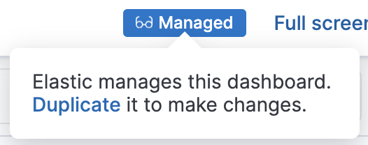

Duplicate dashboards
edit- Open the dashboard you want to duplicate.
- In View mode, click Duplicate in the toolbar.
- In the Duplicate dashboard window, enter a title and optional description and tags.
- Click Save.
You will be redirected to the duplicated dashboard.
To duplicate a managed dashboard, follow the instructions above or click the Managed badge in the toolbar. Then click Duplicate in the dialogue that appears.
